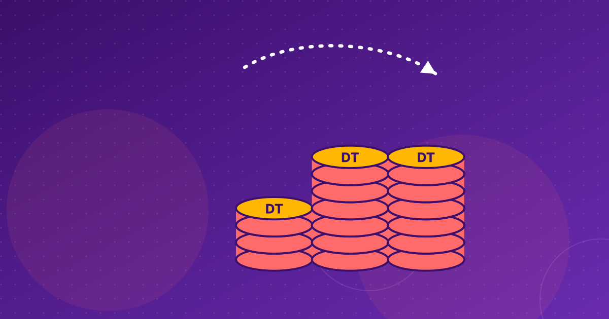

Microfinance in Tunisia: Enda Tamweel, Taysir and the ACM
More than 800,000 Tunisians borrow from microfinance institutions. A look at the rules, the main lenders, the cost of credit and the new cap on excessive rates.

Key takeaways
- Tunisian microfinance is governed by Decree-Law 2011-117 and supervised by the ACM, an independent authority.
- Seven licensed institutions and 289 associations served more than 800,000 borrowers in 2024.
- The average effective rate on microloans reached 25.7% at the end of 2024.
- Since December 2025, a loan priced above the previous semester's category average is considered excessive.
Microfinance in Tunisia reaches more people than almost any other formal credit channel outside the banks. According to the regulator, more than 800,000 people held a microloan in 2024, served by a handful of licensed companies such as Enda Tamweel and Taysir and by hundreds of local associations. The sector is growing, but borrowing is expensive, and the rules on pricing changed at the end of 2025.
How microfinance in Tunisia is regulated
The legal basis is Decree-Law No. 2011-117 of 5 November 2011, which organises the activity of microfinance institutions (IMFs). It created two families of lenders:
- Licensed microfinance companies, set up as public limited companies (SA), which can lend larger amounts and raise funds from banks and capital markets.
- Microfinance associations, mostly small local structures with more limited lending activity.
The same decree-law created the Autorité de Contrôle de la Microfinance (ACM), an independent supervisor. Its board includes representatives of the ministry and of the Central Bank of Tunisia (BCT). The ACM licenses institutions, publishes sector data and, since late 2025, sets the reference rates used to judge excessive pricing.
Associations were given time to bring themselves into line with the 2011 framework. That deadline was extended several times, most recently to 31 December 2021, according to a government decree published in the Official Journal in February 2020.
The sector in numbers
According to ACM data reported by L'Economiste Maghrébin in June 2025:
- 7 licensed institutions operating 232 branches, plus an eighth associative structure;
- 289 active microfinance associations;
- more than 800,000 borrowers in 2024, for TND 2,562.5 million, up from 769,150 borrowers and TND 2,211.3 million in 2023.
Figures relayed by the TAP news agency in August 2025 put outstanding microloans at TND 2,596 million at the end of the first quarter of 2025, with 113,583 new loans granted in that quarter alone. Financial analyst Bassem Ennaifar linked the growth to a fall in non-professional bank lending: for many households, microfinance has become the more accessible option despite higher rates.
The main players
Enda Tamweel
Enda Tamweel is the sector's best-known name. It was created by the NGO Enda inter-arabe and describes itself as the country's first microfinance institution. In August 2024 it reported 109 branches covering every governorate, plus five mobile counters serving isolated areas. It holds the SPTF Cerise+ client protection certification at gold level and an A+ social and environmental rating.
In June 2026, a bank syndicate led by Amen Bank, with BIAT, Arab Tunisian Bank and BTK, arranged a TND 160 million financing for Enda Tamweel, aimed at small entrepreneurs, women business owners, young project holders and low-income households.
Taysir Microfinance
Taysir is majority-owned by the Horchani Group and operated 26 branches as of mid-2024. According to the summary of its 2024 bond prospectus, 46% of its financing went to women, 42% to young people and 74% to regional development zones. Taysir taps the bond market to fund its growth: its 2024 public issue targeted TND 30 million, expandable to TND 40 million, at 10.9% to 11.1% fixed. MicroRate rated it β+.
Others
Microcred SA reported more than 25,500 active clients in September 2025, when MicroRate gave it a β+ institutional rating and a four-star social rating.
The cost of credit
Microcredit is expensive. The ACM put the average effective annual rate (TEG, including interest, fees and insurance) at 25.7% at the end of 2024, and warned that rising costs could slow the inclusion of vulnerable borrowers. A 2026 study by the Observatoire de l'inclusion financière and UNDP cited an average microfinance rate of 31%, compared with 9.5% for bank loans.
Lenders argue that the cost reflects small ticket sizes, field-based monitoring and their own funding costs. Taysir's bond, priced at around 11%, gives a sense of what institutions themselves pay for money.
New rules on excessive rates
On 26 December 2025, an order of the Minister of Finance published in the Official Journal changed how pricing is policed. Every six months, the ACM calculates the average effective rate for each category of microloan, based on the rates actually applied in the previous semester. A loan priced above that average for its category is now considered excessive. The ACM publishes the reference rates in an official notice.
The rule gives borrowers a public benchmark. It also pushes institutions towards the sector average rather than a fixed legal cap.
What could change next
In July 2023, a ministerial working session chaired by the then Prime Minister decided to open microfinance to legal entities, raise the small-loan ceiling to TND 50,000 and create a refinancing fund for microfinance institutions. We could not confirm from available sources whether all of these measures have since been implemented. The 2025 Finance Law also included a TND 20 million credit line for the most vulnerable groups.
Why it matters for fintechs
For financial inclusion, microfinance is the main bridge between cash and formal credit, especially for women and rural borrowers. For fintechs, the openings are practical: digital repayment through wallets (see mobile payments in Tunisia), credit scoring based on alternative data, and tools that cut field costs. Any of these that lowers the cost of serving a small borrower could, over time, push the sector's 25% average rate down.
Companies in this article
Frequently asked questions
Who regulates microfinance in Tunisia?
The Autorité de Contrôle de la Microfinance (ACM), an independent authority created by Decree-Law No. 2011-117 of 5 November 2011. Its board includes representatives of the Ministry of Finance and the Central Bank of Tunisia. It licenses institutions and publishes sector data.
What is the interest rate on microloans in Tunisia?
According to the ACM, the average effective annual rate, including fees and insurance, was 25.7% at the end of 2024. Since December 2025, the ACM publishes a reference average for each loan category every six months, and loans priced above it are considered excessive.
What are the biggest microfinance institutions in Tunisia?
Enda Tamweel is the best-known, with 109 branches as of 2024. Taysir Microfinance and Microcred SA are other licensed players. In total the ACM counted seven licensed institutions in 2025, alongside 289 active associations.
Sources
- Le coût du microcrédit s'envole : le TEG atteint 25,7 % fin 2024 — L'Economiste Maghrébin
- Microfinanceurs et clients de la microfinance, ceci vous concerne — L'Economiste Maghrébin
- Boom de la microfinance en Tunisie : 804 000 Tunisiens concernés — L'Economiste Maghrébin (TAP)
- Double certification pour Enda Tamweel — L'Economiste Maghrébin
- Taysir Microfinance en quête de 40 MTND sur le marché obligataire — L'Economiste Maghrébin
- 160 MDT : Amen Bank mène un pool bancaire pour propulser l'inclusion financière via Enda Tamweel — L'Economiste Maghrébin
This article is for information only and is not legal, financial or investment advice. Figures are dated and sourced; check the latest official publications before making decisions.